تخطيط المصحف المطبوع
١٥ سطراً لكل صفحة و٦٠٤ صفحات بخطوط الصفحات الرسمية، فتأتي الأسطر وعلامات الآيات وعناوين السور كما في مصحف المدينة تماماً.
قرآن • حديث • رقية • أذان
المصحف بتخطيط المدينة مع الاستماع والتتبّع كلمة بكلمة، ومواقيت الصلاة والأذان، والأذكار والرقية الشرعية، وأحاديث الصحيحين.
عن الوالد أ. البشري محمد الحسن — رحمه الله
النسخة ٢٫٢٫٠
أندرويد ٧ فأعلى • نحو ٩ ميجابايت • بلا إعلانات ولا حسابات
لقطات حقيقية من النسخة الحالية
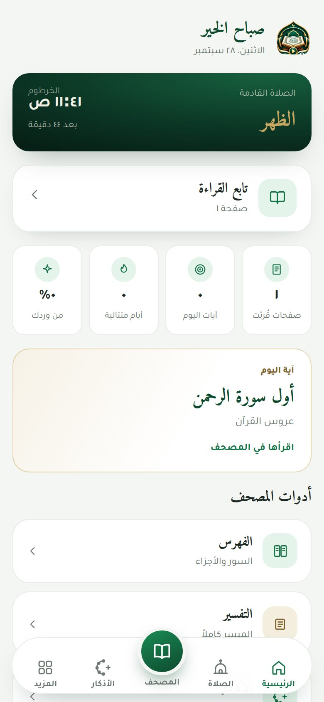
الرئيسية: صلاتك وقراءتك ووردك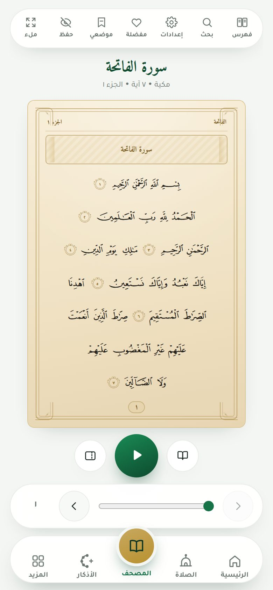
المصحف بتخطيطه المطبوع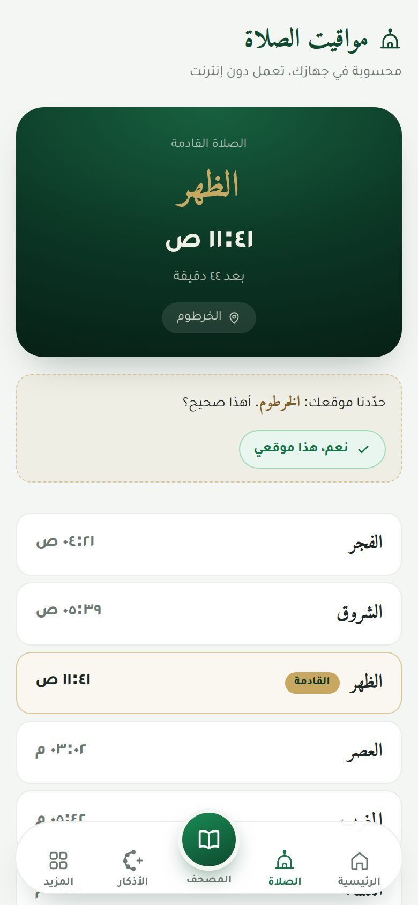
صفحة الصلاة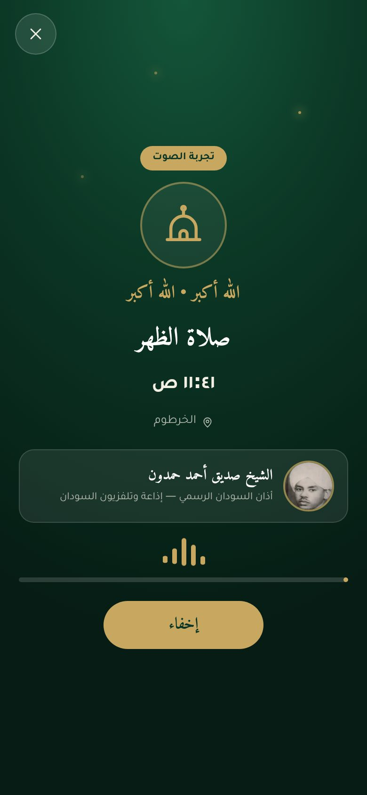
شاشة الأذان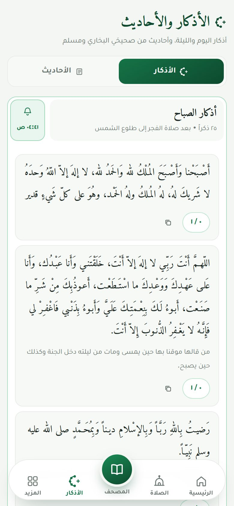
الأذكار والأحاديث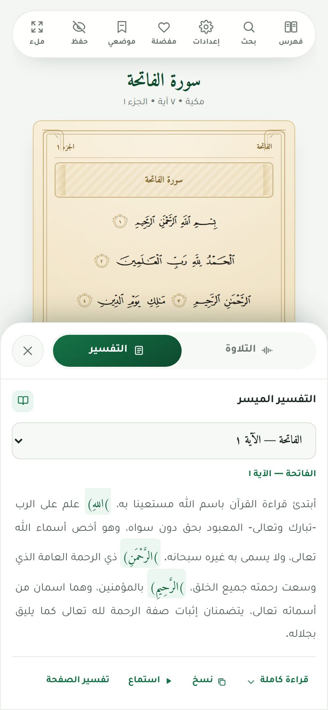
التفسير في الشريط الجانبي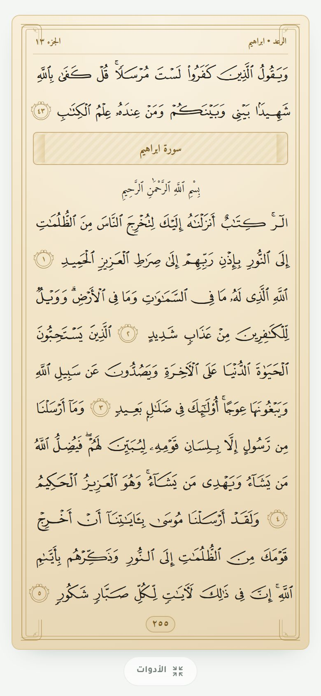
ملء الشاشة: المصحف وحده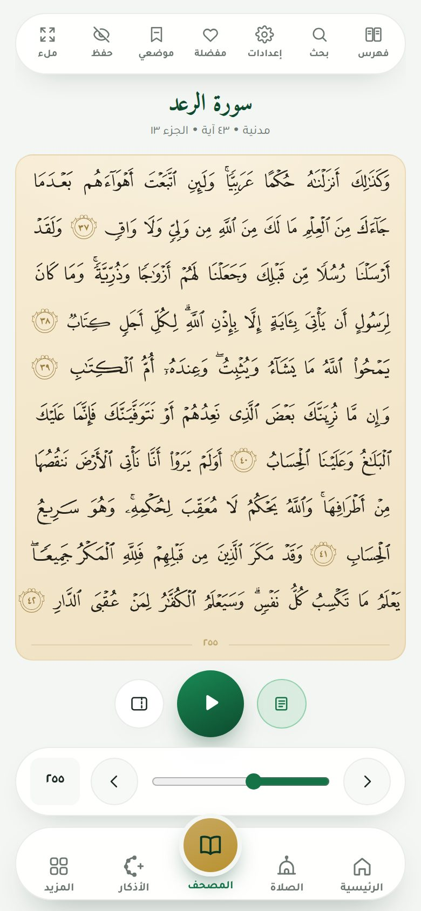
التصفّح المتتابع بلا فواصل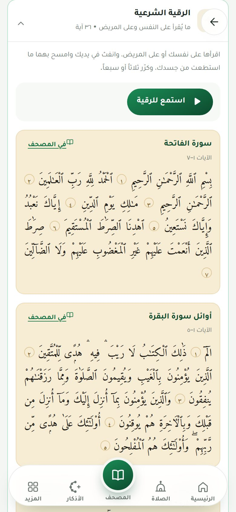
الرقية الشرعية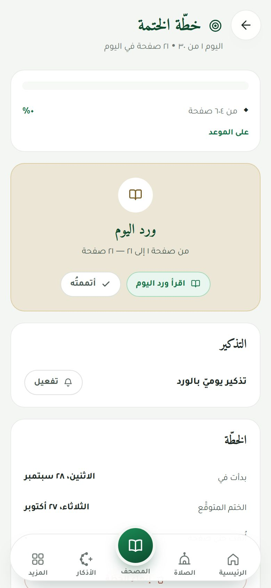
خطّة الختمة وورد اليوم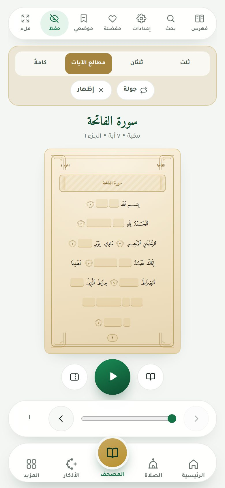
وضع الحفظ بالستر المتدرّج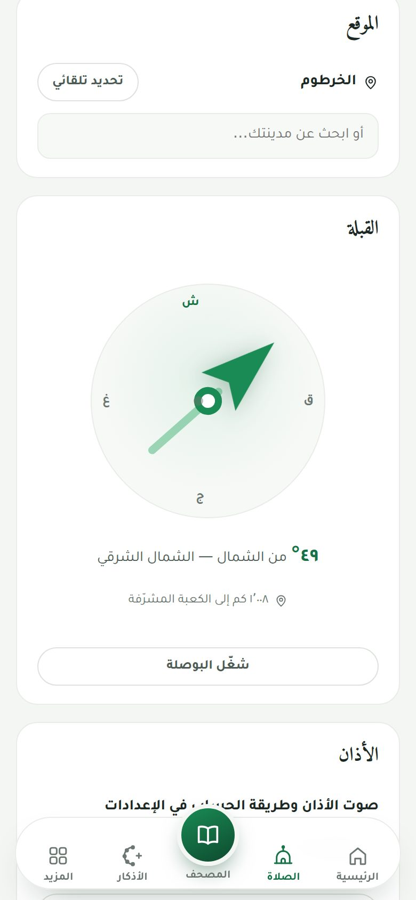
اتّجاه القبلة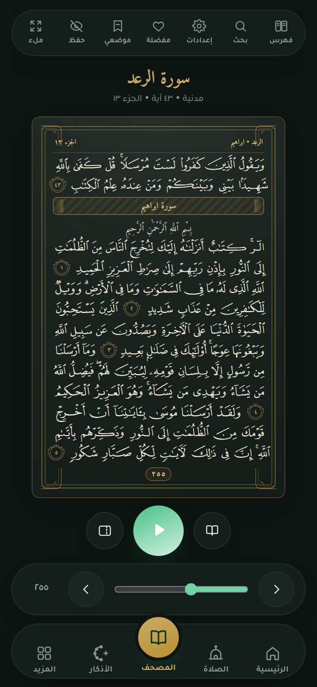
الوضع الليلياسحب لاستعراض بقيّة اللقطات ←
مصحفٌ كامل، وتلاوة تُتابَع كلمة بكلمة، وما يعين على الورد اليومي
١٥ سطراً لكل صفحة و٦٠٤ صفحات بخطوط الصفحات الرسمية، فتأتي الأسطر وعلامات الآيات وعناوين السور كما في مصحف المدينة تماماً.
أحد عشر قارئاً وأوّلهم الشيخ الزين محمد أحمد، وتُضاء الكلمة الجارية والآية الجارية لحظة بلحظة، وتُقلَّب الصفحة وحدها.
تُحسب في جهازك فتعمل دون إنترنت، بتحديد مدينتك تلقائياً وإحدى عشرة طريقة حساب. والأذان بصوت الشيخ صديق أحمد حمدون بشاشة تملأ الشاشة.
أذكار اليوم والليلة في ثمانية أقسام بفضائلها وعدّاد تكرار، مع تنبيه لكل قسم في وقته. وأحاديث من الصحيحين معزوّة بأرقامها.
٦٢٣٦ آية بتفسيرها، في بطاقة تتبع الآية الجارية أثناء التلاوة، وصفحة مستقلّة لتفسير الصفحة أو السورة كاملة.
نصّ المصحف والتفسير والأذكار والمواقيت كلّها في جهازك. والإنترنت مطلوب عند أول تشغيل فقط لتنزيل خطوط الصفحات، وللتلاوة الصوتية.
ثلاث خطوات، وليس فيه حساب ولا إعلان
عند أول تشغيل ينزّل التطبيق خطوط صفحات المصحف مرّةً واحدة ويحفظها في جهازك، فيعمل المصحف بتخطيطه المطبوع دون إنترنت بعدها. ويمكنك تأجيل ذلك والقراءة فوراً بخطّ أميري قرآن المضمَّن.
ما جدّ في كل نسخة